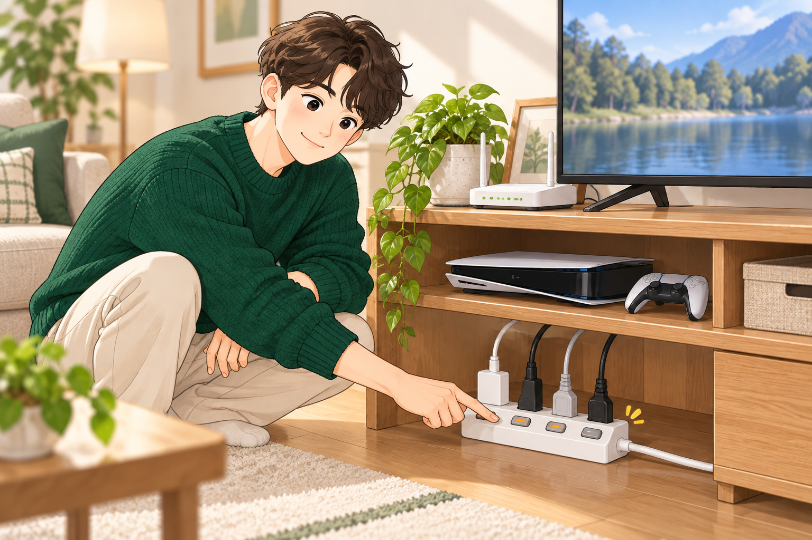
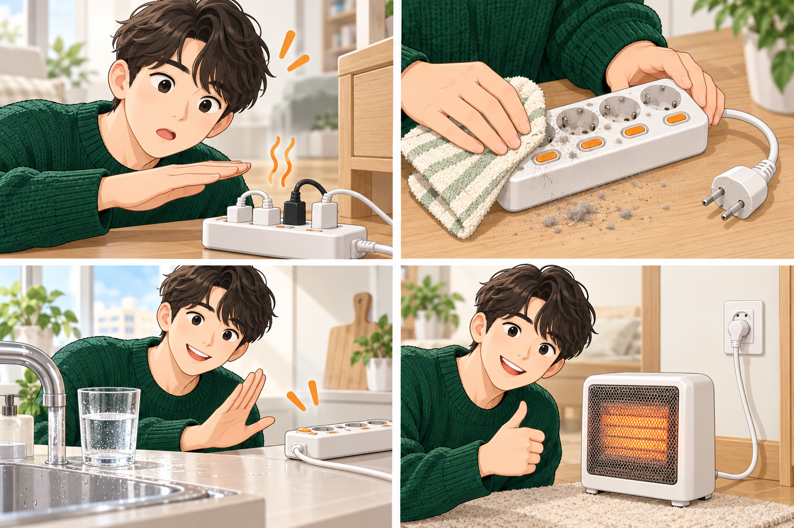

ATLAS 캐릭터 교체 최종 검수
해외는 미지 실사 리뷰형 · 국내는 수호 실용 일러스트형
How to Prepare for Travel Health Risks by Destination
ATLAS Letters — Miji to Suho: 여행 전 여권과 준비물을 점검하는 미지를 대표 장면으로 사용합니다. 임의의 여성 모델이 아니라 미지 마스터 얼굴을 기준으로 고정한 해외용 실사 이미지입니다.
전기요금 줄이는 멀티탭, 대기전력 차단형 고르는 법
국내용은 해외 실사 자산을 사용하지 않습니다. 생활비연구소의 수호가 직접 멀티탭을 설명하고 사용하는 흐름으로 통일합니다.


공개 변경 예정: 현재 게시된 일반 이미지 3장을 위 수호 이미지 3장으로 교체합니다. 해외 미지 자산과 국내 수호 자산은 서로 섞이지 않습니다.